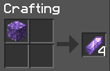
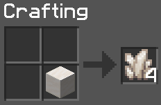
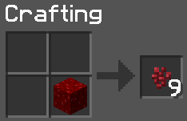
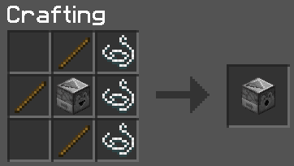
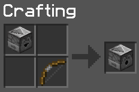
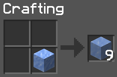
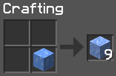
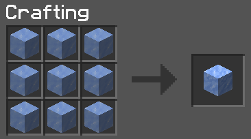
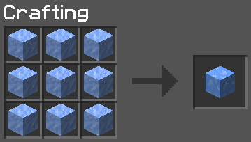

Welcome To The

A community oriented Minecraft server dedicated to the Resonym stream and Discord community.
List of Datapacks:
Caves & Cliffs Preview
This datapack enables experimental terrain generation using Minecraft 1.18's updated generation.
Armour Stand Posing
Allows you to get a book that can pose armour stands in survival. For information on how to use the book, you can watch the embedded video below:
NOTE:
Naming the book Statues will NOT work, you must
visit the spawn tree in order to retrieve the book from the
statue altar.
Bedrock Weakening
Throwing a lingering potion of weakness at bedrock will randomly degrade pieces of it, turning it to cobblestone in the process. This will allow you to access the nether roof easier.
Note: This only works on bedrock that is exposed to the sky, so if you want to weaken bedrock at the bottom of a dimension you will need to dig a skylight for it.
Durability Ping
Get alerted when your tools/armour is below a certain durability
remaining! This can be configured per-player by running
/trigger duraPing and changing the settings in your
chat box.
Shulker Respawn Colour
Shulkers will respawn! With a random chance of being a random colour. Not much else to this one.
Alkali's Magical Sauceyness Datapack
This datapack adds various tweaks and fixes:
-
Deconstruct Amethyst Blocks into Amethyst Shards
 -
Deconstruct Quartz blocks into quartz
 - STONECUTTER ONLY - Convert any stair into it's respective slab.
-
STONECUTTER ONLY -
Convert any stair into a stair that the block could be made from originally.
Example: Deepslate Brick Stairs can be turned into Deepslate Tile Stairs
If/When this datapack is updated by Alkali, the above list will also be updated.
Anti-Enderman Griefing
Pretty self-explanatory... prevents enderman from grabbing blocks.
More Mob Heads
More mobs have a chance to drop their heads upon death, this doesn't affect the rates of mobs that already drop their head in vanilla Minecraft.
Player Head Drops
When you kill a player, you get a head. NOTE: This does not mean that this is a PVP endorsed server, you must still be in a situation where the killing each other is consentual. CONSENT IS IMPORTANT
Dragon Drops
The dragon drops a single elytra and egg when it is killed.
Armoured Elytra
Allows you to combine a chestplate and an elytra by dropping them on an anvil, and decombine them by dropping the combined item on a grindstone. When an armoured elytra burns, it won't burn the chestplate (if it is netherite), but the elytra will be burned.
Crafting Tweaks
Some Miscellaneous Crafting Tweaks:
-
Deconstruct Netherwart blocks
 -
Dropper to Dispenser
  -
Deconstruct Ice
  -
Combine ice
 